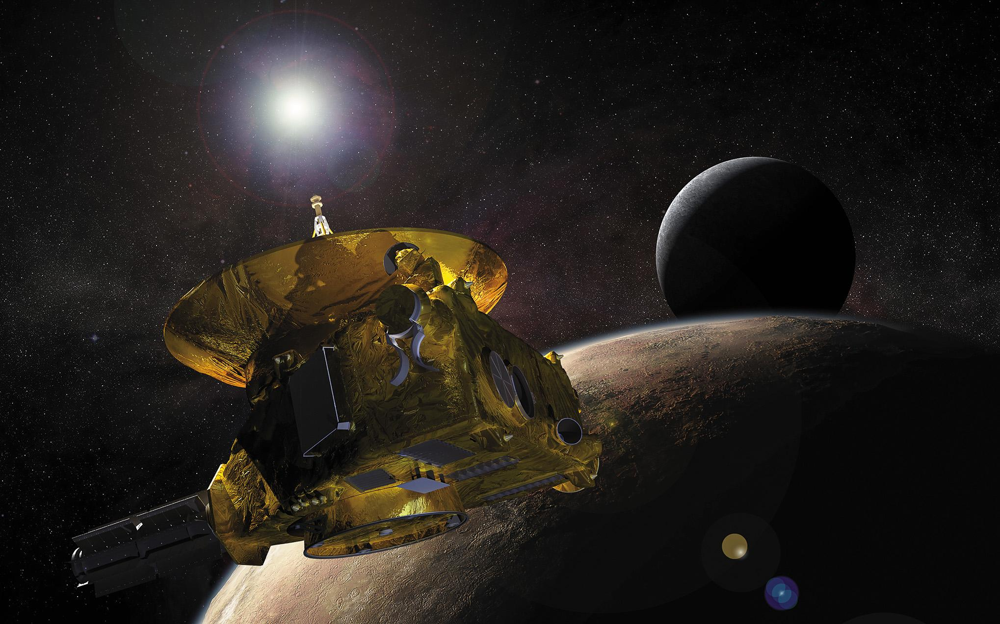

Plutón: Rostro cósmico
Historia intrigante y belleza celestial capturada en expediciones fascinantes.
Explora sus imágenes
Historia intrigante y belleza celestial capturada en expediciones fascinantes.
Explora sus imágenes